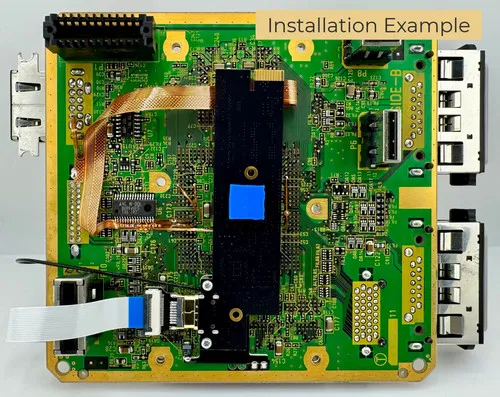
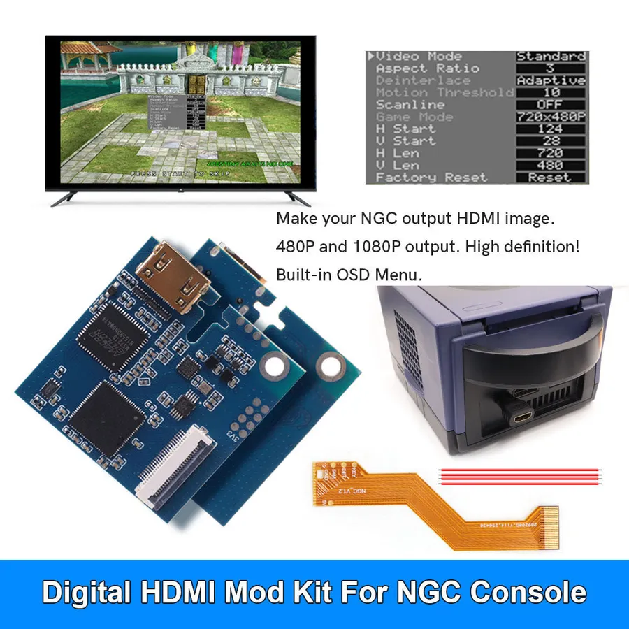
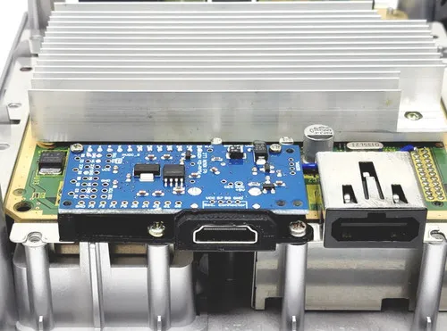
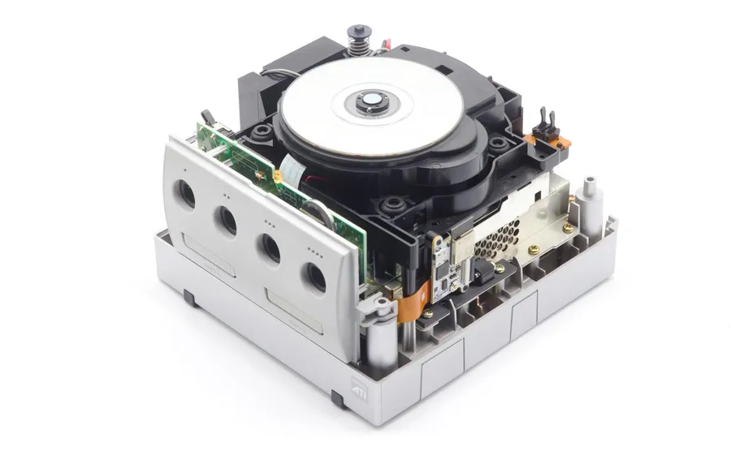
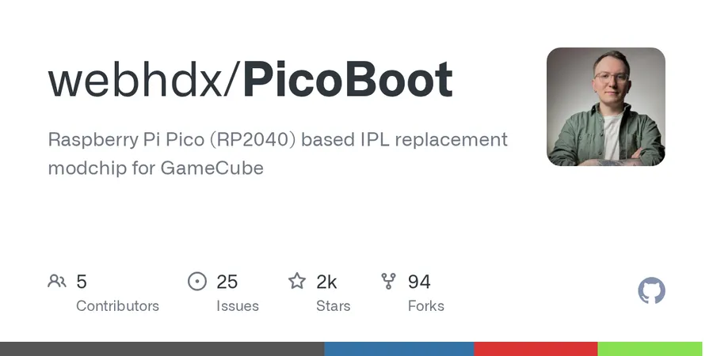
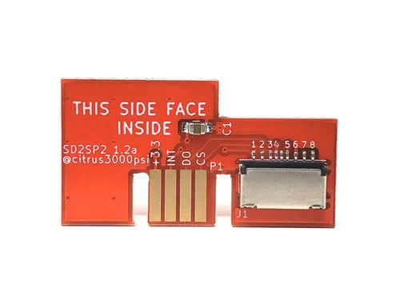
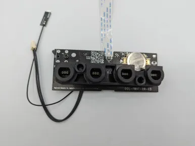
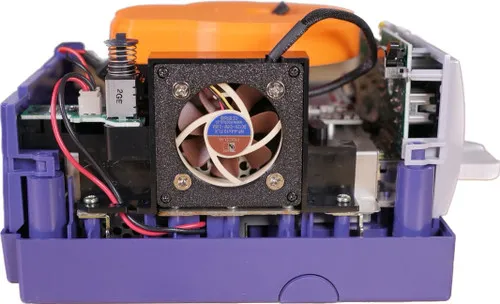

Accueil ›
Wiki ›
GameCube
Console de salon
Nintendo GameCube
Le cube magique de Nintendo. Découvrez comment le faire passer à la haute définition et vous affranchir des disques optiques.
2001 · 10 mods référencés
La Nintendo GameCube (2001) est une cible de modding particulièrement riche : sortie HDMI numérique de très haute qualité, émulateurs de lecteur optique (ODE), modchip open-source et chargement par carte SD. Selon le modèle (DOL-001 avec port Digital AV, ou DOL-101 sans), les solutions vidéo diffèrent. Voici les mods de référence, classés par domaine.
📺 Vidéo & HDMI 💿 ODE & Chargement 🔧 Modchip & Stockage 🎮 Contrôle ⚙️ Maintenance & Refroidissement
Passer la GameCube en HDMI numérique pour une image parfaite sur écran moderne. Les kits internes se branchent sur le bus vidéo numérique : les modèles DOL-001 disposent d'un port Digital AV, tandis que le DOL-101 (sans ce port) nécessite des kits compatibles digital-to-digital.
Premium ⚑ à valider

© PixelFX PixelFX
Retro GEM
La solution HDMI interne haut de gamme : Wi-Fi pour les mises à jour et scaling jusqu'en 1080p/1440p sur l'édition Shiny.
Sortie HDMI numérique sans latence Mises à jour firmware par Wi-Fi Scaling 1080p/1440p et filtres scanlines (édition Shiny) Compatible DOL-001 et DOL-101 (NTSC/PAL)
Type HDMI interne
Résolution jusqu'à 1440p (Shiny)
Mises à jour Wi-Fi ⚠ Prérequis : Niveau de soudure avancé
Points forts Qualité d'image de référence Filtres et scaling avancés (Shiny) Mises à jour Wi-Fi Édition Basic upgradable en Shiny Compromis Soudure avancée requise Tarif élevé Installation par un pro recommandée Sources : PixelFX — GC HDMI Retro GEM Kit
⚑ à valider
📷
Insurrection Industries / citrus3000psi
GCDual
Kit HDMI interne open-source très réputé, basé sur GCVideo, avec sortie simultanée HDMI et analogique.
Sortie HDMI numérique (GCVideo) Sortie analogique simultanée possible OSD avec scanlines et réglages Compatible DOL-001
Type HDMI interne
Base GCVideo
Sortie HDMI + analogique Points forts Qualité GCVideo reconnue Double sortie HDMI/analogique Open-source Compromis Soudure requise Disponibilité variable Sources : game-tech.us — GCDual
⚑ à valider

© Hispeedido Store Hispeedido
Internal HDMI Kit (Digital-to-Digital)
Mod HDMI interne digital-to-digital à prix accessible, compatible avec tous les modèles dont le DOL-101.
Sortie HDMI 480p/1080p Compatible DOL-001 et DOL-101 Menu OSD (modes vidéo, ratios, désentrelacement) Réglage de positionnement de l'image
Type HDMI interne
Résolution 480p / 1080p
OSD Oui Points forts Compatible DOL-101 (sans port Digital) Menu OSD complet Prix accessible Compromis Soudure requise (PCB + flex) Notice parfois sommaire Sources : Hispeedido Store — Internal NGC Digital HDMI MOD Kit
⚑ à valider

© Stone Age Gamer — Pluto Digital HD Chip KNJN / Citrus3000psi
Pluto-IIx HDMI
Le mod HDMI interne historique pour les DOL-001, basé sur le firmware open-source GCVideo.
Sortie HDMI directe (GCVideo) Open-source Installation robuste avec support PCB imprimé 3D
Type HDMI interne
Base GCVideo
Compatibilité DOL-001 ⚠ Prérequis : Modèle DOL-001 (port Digital AV)
Points forts Solution éprouvée Open-source (GCVideo) Image numérique propre Compromis Soudure requise Réservé au DOL-001 (port Digital AV) Largement supplanté par GCDual/Retro GEM Sources : Stone Age Gamer — Pluto Digital HD Chip
Les émulateurs de lecteur optique (ODE) remplacent ou complètent le lecteur DVD pour charger les jeux depuis une carte SD, avec un débit bien supérieur à celui du disque d'origine.
Nouveauté ⚑ à valider

© Crowd Supply Team Off Broadway
FlippyDrive
ODE sans soudure qui conserve le lecteur disque d'origine tout en chargeant des jeux via microSD ou réseau.
Installation 100% sans soudure et réversible Préserve le lecteur optique d'origine Basé sur le Raspberry Pi Pico (RP2040) Chargement microSD ou réseau, 2.8x à 10x plus rapide que les solutions EXI
Type ODE
Base RP2040
Installation Sans soudure Points forts Sans soudure et réversible Garde le lecteur disque Tient dans la coque sans découpe Très rapide Compromis Plus récent (firmware en évolution) Nécessite quand même un point d'entrée homebrew Sources : Crowd Supply — FlippyDrive · Time Extension — New $38 FlippyDrive ODE
⚑ à valider
📷
GC Loader
GC Loader PNP (HW2)
Remplace entièrement le lecteur DVD par un lecteur microSD haute vitesse, ultra-stable et plug & play.
Remplace le lecteur optique Interface SD pleine vitesse (jusqu'à 1 To) Plug & Play, sans soudure Compatible DOL-001 et DOL-101
Type ODE (remplacement lecteur)
Capacité SD jusqu'à 1 To
Installation Plug & Play ⚠ Prérequis : Tournevis Gamebit 4.5mm
Points forts Débit maximal Fiabilité reconnue Sans soudure (tournevis Gamebit 4.5mm requis) Compromis Supprime le lecteur disque (non réversible sans le conserver) Swiss recommandé pour le menu complet Sources : GC Loader — PnP HW2
Hacker le boot de la console et ajouter du stockage SD discret pour lancer Swiss et le homebrew sans disque ni ODE complet.
Économique ⚑ à valider

© PicoBoot — GitHub Open Source (webhdx)
PicoBoot
Modchip IPL open-source basé sur un Raspberry Pi Pico : boote directement Swiss/homebrew depuis une carte SD.
Remplace l'IPL d'origine (boot) Basé sur un Raspberry Pi Pico (~5 €) Boote ipl.dol (Swiss) automatiquement Région-free et firmware reflashable par USB
Type Modchip IPL
Base Raspberry Pi Pico (RP2040)
Firmware USB reflashable ⚠ Prérequis : Loader SD (SD2SP2) ou ODE pour charger les jeux
Points forts Coût dérisoire Open-source et reflashable S'installe sur l'ensemble ventilateur Compromis Soudure requise (quelques points) Nécessite un loader SD (SD2SP2 ou ODE) pour les jeux Sources : PicoBoot — GitHub (webhdx) · RetroRGB — PicoBoot Is Here
⚑ à valider

© Stone Age Gamer Générique
SD2SP2 Adapter
Adaptateur microSD invisible logé dans le Serial Port 2 sous la console, idéal avec PicoBoot et Swiss.
Se branche dans le Serial Port 2 (sous la console) Sans soudure, sans ouverture Libère les slots carte mémoire Compatible Swiss, GBI, mGBA
Type Loader microSD
Port Serial Port 2
Installation Sans soudure ⚠ Prérequis : GameCube équipée du Serial Port 2, PicoBoot ou disque de boot homebrew
Points forts Discret (sous la console) Installation immédiate sans soudure Compagnon idéal de PicoBoot Compromis Nécessite la présence du Serial Port 2 Débit inférieur à un ODE Nécessite PicoBoot ou un disque de boot Sources : RetroRGB — GameCube Serial Port SD Adapter
Jouer en sans-fil avec n'importe quelle manette Bluetooth moderne grâce à BlueRetro, en interne ou via un adaptateur externe.
Sans-fil ⚑ à valider

© 8BitMods 8BitMods / BlueRetro
BlueRetro Internal Adapter (V3)
Module Bluetooth interne (BlueRetro) qui permet d'appairer jusqu'à 4 manettes modernes sans fil.
Interface Bluetooth BlueRetro haute vitesse Jusqu'à 4 manettes sans fil (mixables avec filaires) Compatible PS4/PS5, Xbox, Switch, 8BitDo… Sans soudure (remplace la carte des ports manette)
Type Adaptateur Bluetooth interne
Manettes jusqu'à 4
Installation Sans soudure Points forts Jeu sans fil avec manettes modernes Installation interne discrète sans soudure Mappage des boutons configurable Compromis Latence Bluetooth sur certaines manettes Mise à jour firmware via ordinateur Bluetooth Sources : 8BitMods — Internal Bluetooth (BlueRetro) Adapter V3 · Nintendo Life — Stealth GameCube Bluetooth Mod
Réduire le bruit de la console en remplaçant le ventilateur d'origine par un Noctua ultra-silencieux.
⚑ à valider

© Stone Age Gamer Retro Frog / Noctua
40mm Noctua Fan Mod
Remplace le ventilateur 50mm bruyant d'origine par un Noctua 40mm silencieux via un support imprimé 3D.
Support adaptateur imprimé 3D + câble d'adaptation Compatible Noctua NF-A4x10 FLX 12V (40x10mm) Réutilise les 4 vis d'origine Meilleur flux d'air
Ventilateur Noctua NF-A4x10 FLX 12V
Format 40x10mm
Adaptateur Imprimé 3D ⚠ Prérequis : Ventilateur Noctua 40mm 12V, Adaptateur 3D + câble
Points forts Silence quasi total Meilleur refroidissement Réversible Compromis Adaptateur 3D et câble requis Ventilateur Noctua à acheter séparément Sources : Retro Frog — GameCube 40mm fan adapter
Sources générales : RetroRGB — GameCube · PicoBoot — GitHub (webhdx)